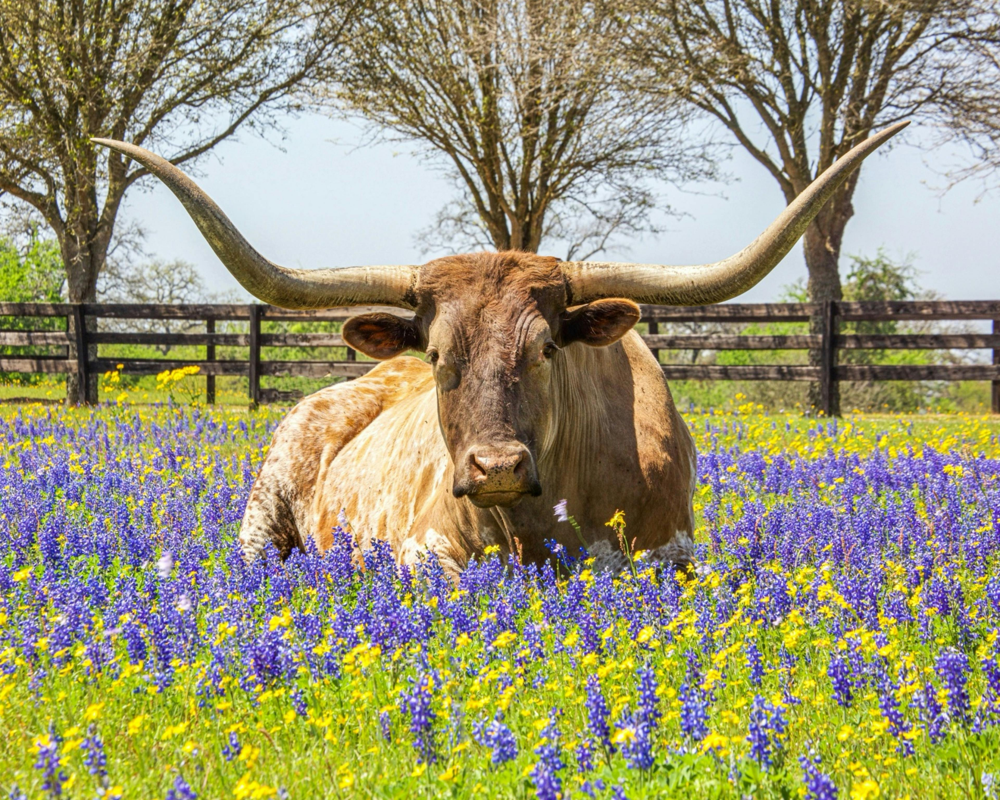

Texas
Texas ranks as the second-largest state in the U.S. by both size and population, boasting more than 30 million inhabitants as of 2022. The state has a diverse and rich history, influenced by its dynamic current state and its unique background as an independent republic.
"Don't Mess with Texas!" "Don't Mess with Texas!" It's what it means to be an independent and proud spirit. Texas has traditional values that are still deeply rooted in Texas's contemporary way of life, impacting local festivals and community events. Texans are known for their rodeos and country music, effortlessly making them great for people who come in to visit.
Explore the Heart of Texas ❤️
Capital: Austin
- Located in the Hill Country
- State capital of Texas
- Famous for its live music
- Known for its tech industry
- Popular for its delicious tacos
Tasting Texas: A Culinary Exploration
| City | Famous Dish | Landmark |
|---|---|---|
| San Antonio | Texas BBQ | The Alamo |
| Austin | Tacos | Mount Bonnell |
| Houston | Trill Burgers | Space Center Houston |
Texas: A State of Contrasts and Opportunities
- Texas is a state of dynamic contrasts, where the landscape changes from the beaches of the Gulf Coast to the untamed West Texas deserts, from urban diversity to rural simplicity.
- The state's economy is just as diverse, driven by industries ranging from energy and agriculture to technology and aerospace.
- This economic powerhouse consistently surpasses national averages in income levels, offering a wealth of opportunities for its residents.
- Whether you're drawn to the fast-paced life of its cities or the tranquil beauty of its countryside, Texas offers a lifestyle as varied as its landscapes.
- The state is a distinctive and dynamic location to live, work, and explore thanks to its rich cultural fabric and strong economy.